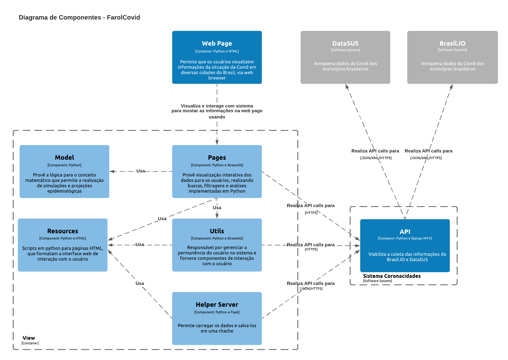

Documentação arquitetural para o projeto Farol Covid
Autor
Este documento foi produzido por Natan Macena Ribeiro.
- Matrícula: 114111371
- Contato: natan.ribeiro@ccc.ufcg.edu.br
- Projeto documentado: https://github.com/ImpulsoGov/farolcovid
Descrição Arquitetural – FarolCovid
A fonte utilizada para produção deste documento foi o projeto Farol Covid. A partir desse projeto (Farol Covid), este documento propõe uma descrição arquitetural baseada essencialmente no modelo C4, pelo qual permite que diferentes stakeholders possam compreender o funcionamento da ferramenta a partir de algumas visões arquiteturais.
Descrição Geral sobre o Farol Covid
O Farol Covid é uma ferramenta de monitoramento do risco de colapso no sistema de saúde em municípios brasileiros com a COVID-19. Além de apresentar a situação atual da COVID-19 nos estados ou municípios, esse projeto permite que governantes consigam definir políticas de contingenciamento da doença, baseando-se em indicadores bem definidos que inclusive, permitem a realização de simulações que projetam possíveis cenários para a região de interesse. Para mais detalhes sobre o projeto abordado, acesse este link.
Objetivo Geral
O objetivo do projeto é disponibilizar um serviço para coleta e visualização de dados relacionados a COVID-19, apresentando análises e indicadores da situação da doença para uma determinada região.
Objetivos Específicos
A idéia é viabilizar que gestores públicos (estaduais e municipais), possuam uma ferramenta que mostra a situação atual da COVID-19 e indica possíveis cenários baseados no comportamento da doença na região de seu mandato.
Contexto
A partir da introdução, podemos expecificar o sistema do FarolCovid, como um serviço Web que apresenta informações contidas nos sistemas de base de dados brasileiros Brasil.IO e DataSUS, considerando os interesses especificos do usuário. De maneira geral, o sistema funciona como um facilitador, entre o usuário e as bases de dados anteriormente citadas, em que simplifica a obtenção de determinada informação por meio de refinamento e operações de analises sobre tais bases de dados.
Assim, podemos representar a aplicação como uma entidade intermediária (“FarolCovid”) entre as entidades “Usuário” e “Brasil.IO” juntamente com “DataSUS”, como é ilustrado no diagrama de contexto abaixo:

Containers
Como containers do FarolCovid, podemos elencar 3 entidades: Web Page, View e API.
O primeiro deles, Web Page, é responsável por pela representação gráfica do sistema, ou seja, todo o HTML que o browser irá interpretar e renderizar para o usuário final.
O elemento View, trata-se de toda lógica do negócio, realizando todas as operações com os dados (refinamento, filtragem e análise) coletados das bases de dados (Brasil.IO e DataSUS) atravéz de uma API desenvolvida para isso. Esse contêiner utilizar Python como linguagem e é acompanhado pelos frameworks Flask e Streamlit. O sistema é executado numa nuvem Heroku, utilizando uma máquina virtual com o sistema operacional Ubuntu 18.04 LTS.
O container API, é um conjunto de rotinas e padrões de programação para acesso das bases de dados do FarolCovid. Foi construido para o sistema que estamos apresentando e o projeto (que pode ser acessado neste link) possui o nome de Coronacidades API. Assim como o FarolCovid, o Coronacidades API é servido por uma maquina virtual Heroku e foi desenvolvido em Python juntamente com o framework Django, a partir do padrão de projeto MTV (Model, Template, View).
Veja principais endpoints utilizados pelo FarolCovid:
- br/cities/cases/full: Fornece histórico completo de dados do Brasil.IO com a taxa e estimativa dos casos ativos
- br/cities/simulacovid/main: Dados filtrados para servir a aplicação SimulaCovid do FarolCovid
- br/cities/farolcovid/main: Dados filtrados e indicadores de cidades
- br/states/farolcovid/main: Dados filtrados e indicadores de estados
*Para os demais endpoints acesse API.
Abaixo encontra-se o diagrama de container para o que foi discutido anteriormente:

Componentes
A fim de detalhamento, podemos dividir o container View em cinco componentes: Resources, Model, Helper Server, Utils e Pages.
O componente Resources é composto por um conglomerado de scripts em Python que são utilizados em páginas HTML, compondo de forma fragmentada, funcionalidades para interação do usuário no sistema.
Model provê o conceito matemático utilizado para a realização de simulações e projeções epidemiológicas, através da linguagem em Python.
Helper Server utiliza o microframework Flask juntamente com Python, para fornecer um serviço de cache do sistema, carregando dados via API calls.
O elemento Utils, é responsável pela realização de diferentes funções relacionadas ao gerenciamento da seção do usuário no sistema coletando, informações da seção dos usuário e interações através do Streamlit framework, integrado com Python.
Por último temos o componente Pages que usa Python, HTML e o framework Streamlit, para fornecer visualização interativa com dados. É nesse componente, encontra-se todas as subaplicações disponibilizadas pelo FarolCovid (descritas na seção Visão de Informação deste documento) e se comunica com a API para buscas, filtragens e realização de análises dos dados.
Logo abaixo, temos o diagrama de componentes para o FarolCovid:

Código
Nesta etapa não faremos diagramas que apresentam detalhes da implementação. Faremos isso mais adiante.
Visão de Informação
Como sabemos, a principal funcionalidade do projeto Farol Covid é apresentar informações pré-processadas, no formato de análises, de acordo com uma determinada localidade. Dessa forma, nesta seção abordaremos de maneira simplificada, o percurso habitual que os usuários percorrem na busca das informações disponibilizadas pela aplicação em estudo.
Na página inicial, o usuário se depara com uma breve apresentação da plataforma e, logo em seguida, uma caixa de seleção é disponibilizada dividida em três tipos: Estado, Região de Saúde (algo particular de cada estado) e Município (Municípios do estado selecionado). Podemos perceber que há uma hierarquia entre os tipos disponíveis, onde um “Município” é um subtipo de uma “Região de Saúde” e de um “Estado”, assim como “Região de Saúde” é subtipo de um “Estado”.
Logo abaixo, temos as informações apresentadas de acordo com o que foi selecionado pelo usuário. Essas informações são mostradas a partir de métricas bem definidas (que estão disponíveis para consulta no botão “Entenda a Classificação dos Níveis”) e indicam, por exemplo, situação e controle da doença, capacidade do sistema de saúde, etc.
Além disso, é disponibilizado quatro subaplicações que permitem uma análise mais detalhada de acordo com a localidade anteriormente escolhida, sendo elas: Simula Covid, que permite a realização de uma simulação da situação da Covid considerando variáveis pertinentes; Distanciamento Social, que mostra a taxa de isolamento social; Saúde em Ordem, que dá uma prognóstico no que diz respeito a possíveis atividades econômicas seguras para reabertura; Onda Covid, que mostra a evolução da curva de contágio da Covid-19 em relação a outros países.
Para cada interação do usuário, a página é automaticamente recarregada de acordo com o que foi selecionado. Por default, o elemento pré-selecionado do sistema é o estado do Acre.
Vejamos abaixo, uma máquina de estados que ilustra fluxo da informação da aplicação estudada, para principais interações de um usuário: